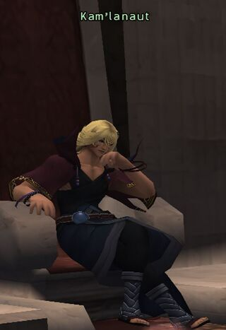

Before you begin
- Complete The Chamber of Oracles.
- A Delkfutt key enables the basement shortcut; without it, use the normal tower ascent.
Starting point
Zone entry, then Qe’Lov Gate · Stellar Fulcrum
People in this mission


Walkthrough
- Enter Lower Delkfutt’s Tower for the story scene. With a Delkfutt key, use the E-8 Cermet Door, continue through the basement J-8 door, and examine the H-8 ??? to reach the upper tower.
- From Upper Delkfutt’s Tower floor 10, use the F-8 doorway and stairs. On floor 11, take J-6 upstairs; on floor 12, reach F-10 and the Stellar Fulcrum portal.
- Watch the arrival scene, prepare, and enter the mission battle at Qe’Lov Gate. Defeat Kam’lanaut.
- Finish the victory scenes and check that Ro’Maeve is the active mission.
Battle and progress notes
- Avoid magic near dolls and pots. Kam’lanaut can remove buffs, inflict Silence/Slow and reset hate. His active Elemental Blade absorbs matching elemental damage; change elements or stop that damage.
- The pinned native battlefield allows Trusts, up to six participants and 30 minutes, with the server maximum level as its cap. This is a code check, not a completed Zenith solo test.
Completion and reward
Title: Destroyer of Antiquity; story progression.
Area maps
Open a zone below, then select a map to enlarge it. Match the named floors and grid coordinates in the steps; these are reference area maps, not a live position tracker.
Lower Delkfutt's Tower


Middle Delkfutt's Tower


Upper Delkfutt's Tower


Ro'Maeve


Zone guides
- Lower Delkfutt's Tower
- Middle Delkfutt's Tower
- Upper Delkfutt's Tower
- Stellar Fulcrum
- Chamber of Oracles
- Ro'Maeve
References
- HorizonXI Wiki: Zilart Mission 8
- HorizonXI Wiki: Delkfutt Key
- Reviewed mission implementation
- Reviewed mission implementation
Steps are an original summary of the linked walkthrough and reviewed source. Other servers’ bonus rewards are not included. How to read requirements, waits and battlefield notes.
Additional level-75 reference
|
Walkthrough
- Bring your Delkfutt Keys to avoid walking up the tower and mages should bring some Echo Drops. Melee should bring several Hi-Potions.
- A full party of level 65+ is needed and higher is recomended.
- Once inside Delkfutt's Tower, if you have a Delkfutt Key, make a left at the first fork and go to E-8, where you will trade the key to the Cermet Gate. Then go to H-8 and search for ???. Click it and you'll be transported to Upper Delkfutt Tower.
- At Upper Delkfutt's Tower, go to F-8 through the door, and go up the stairs to the 11th floor.
- Remember to sneak/invisible as you can get aggro from bats and giants. Watch out for dolls and pots that aggro to magic.
- On the 11th floor, go to J-6, then on the 12th floor go to F-10. Zone through the portal to Stellar Fulcrum. Buffs will wear upon entering fight.
- Fight and kill Kam'lanaut.
- Kam'lanaut casts Dispelga, Silencega, and Slowga.
- His Elemental Blade ability can be Dispeled and gives him an En-Spell of that element as well as absorbs all damage of that element. (e.g. If he has Lightning Blade up, and you cast Thunder 4 on him, he will gain 1,300 HP instead of losing it) He uses the ability often and changes the element(the effect doesn't stack w/ previously used effects)
- Uses Great Wheel (~200 dmg AOE and Hate Reset).
- Uses Light Blade (700-1,200 dmg single target). He readies Light Blade about 2 seconds before it goes off, so you can Stun it, but you can't move out of range because it will still hit you from a great distance. It will, however, be absorbed by spells such as Utsusemi.
- Immune to Silence and Sleep
- 12.5% Magic Defense Bonus(same as Evil Weapon Monsters)
- About 10,000 HP
Game Description
- Mission Orders
- Hurry to Delkfutt's Tower and stop the Zilartian princes from completing their plan to open the Gate of the Gods.<youtube v="dCCOFogxcmY"></youtube><youtube v="ThZi__V_-Ls"></youtube>
Adapted from Eden Wiki: Return to Delkfutt's Tower · Contributors and history · CC BY-SA 4.0. Revision 8929. Layout, links and optional background text adapted for Zenith.